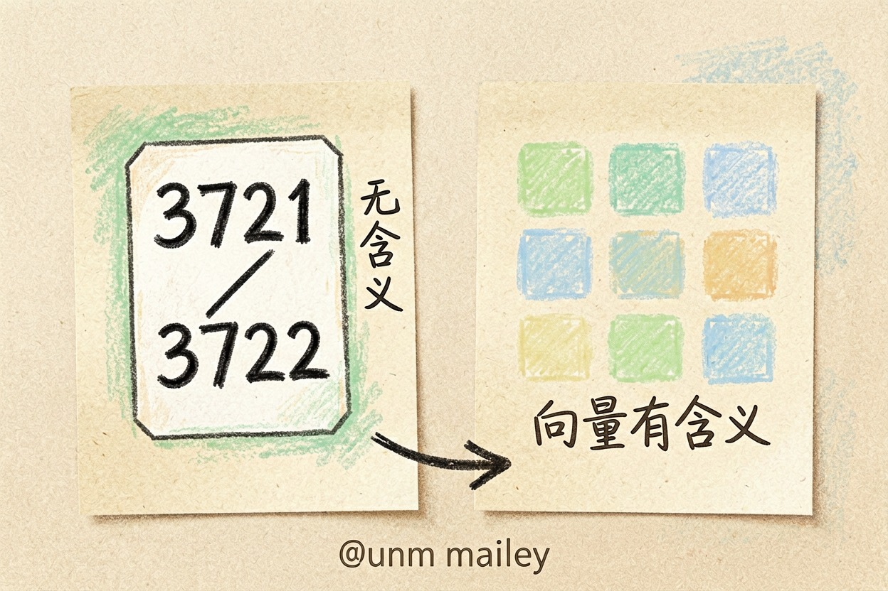
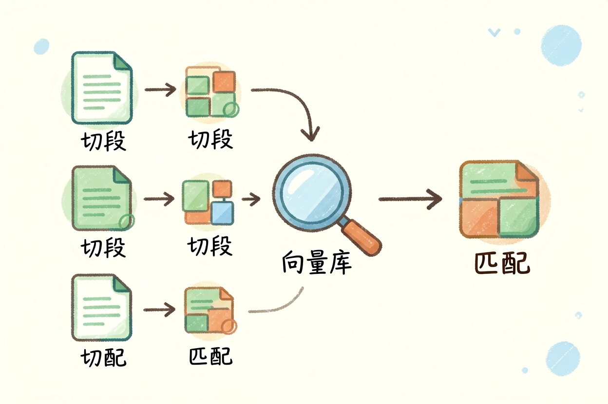

什么是 Embedding？把文字变成数字的那一步 — Learntide
汉字对机器来说只是笔画，得先翻译成一组坐标，远近才有意义。这层翻译几乎是所有语义功能的地基。
什么是 Embedding：把意思变成坐标
什么是 Embedding？它是把一段文字换算成一串小数的过程，这串小数就是向量。关键性质只有一条：意思接近的内容，向量在空间里也靠得近。
打个比方。把每个词都当成地图上的一个点，「猫」和「狗」离得近，「猫」和「螺丝刀」离得远。文本向量化是什么意思，说的就是这件事——给语义找一组坐标。
有了坐标，机器就能算距离。远近一比，谁跟谁相关，立刻有了可计算的答案。
这串数字通常有几百到上千维。维度不用你操心，选定一个模型，长度就固定了。
它和分词编号不是一回事

很多人把编号和向量搞混。分词那一步只是给每个片段发身份证，编号 3721 和编号 3722 之间没有任何含义上的关系。
向量不一样。它的每一维都由训练过程决定，整串数字合起来才表达含义。词向量是什么，最早指的就是给单个词训练出的这类表示，后来扩展到整句、整段甚至整张图。
还有个区别在于粒度。编号是死的，一个片段永远对应同一个号。向量是活的，同一个词放进不同句子里，现代模型给出的表示会随语境微调。
句子 A：怎么申请退货
句子 B：退换流程在哪看
句子 C：明天北京会下雨吗
余弦相似度（示意）
A ↔ B 0.86 → 判定相关
A ↔ C 0.11 → 判定无关数值本身不用记。你只要知道，比较的是方向而不是字面重合度。
为什么检索和推荐都靠它

embedding有什么用，最直接的答案是语义检索。用户问「怎么退货」，文档里写的是「退换流程」，字面一个都对不上，向量却能把它捞出来。
知识库问答的第一道工序就是这个。文档切段、逐段转向量、存进库里，提问时再把问题转成向量去比对。命中的段落连同问题一起交给模型作答。
跨语言也能对上。中文问题命中英文文档，只要用的是支持多语言的向量模型，这件事就成立。查外文资料时很省事。
推荐、去重、聚类、相似图片搜索，走的也是同一套逻辑，只是换了输入类型。
用起来最容易踩的坑
第一，入库和检索必须用同一个向量模型。换了模型，坐标系就变了，两边的数字对不上。
第二，中文效果要单独验。很多向量模型以英文语料为主，中文表现明显偏弱，选之前拿自己的真实问题跑一批。
第三，切段别贪长。一段里塞了三个话题，向量会取一个折中位置，结果哪个都不像。
第四，别用它做精确匹配。订单号、身份证号、型号这类，还得靠关键词查，或者两种方式一起上。
别把相似度当成正确答案
向量检索永远会返回结果。库里没有对得上的内容，它照样把最接近的几条端出来，相似度还挺高。这点最容易让人误判。
所以要设阈值，也要保留原文出处，让人能点开核对。把相似度当成参考分，不要当成判决书。
弄明白什么是embedding之后，你会发现它只是把语义变得可计算，并不保证语义被理解对。
本文信息核对于 2026-08-08。AI 产品的价格、免费额度与功能变动频繁，实际以各工具官网当前说明为准。